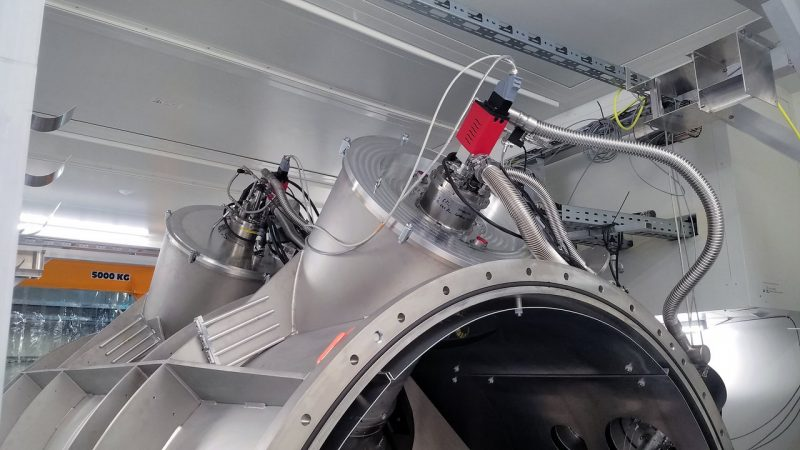

ဒီဂြိုလ်ကြီးကို WASP-76b လို့ အမည်ပေးထားပါတယ်။ ဒီဂြိုလ်ကြီးကို ၂၀၁၃ ခုနှစ်ကမှ ရှာဖွေတွေ့ရှိ ခဲ့တာပါ။ ဒီဂြိုလ်ကြီးဟာ သူ့မိခင်ကြယ်ကို အရမ်းပဲ နီးကပ်စွာ ပတ်နေတယ်လို့ ဆိုပါတယ်။ ဘယ်လောက် နီးကပ်လဲဆိုရင် သူ့မိခင်ကြယ်ကို တစ်ပတ်ပတ်မိဖို့ ကမ္ဘာက နေ့နဲ့ တွက်ရင် နှစ်ရက်ပဲ ကြာပါတယ်။
ဒီလောက်ကပ်နေတော့ ဒီဂြိုလ်ကြီးဟာ မတရား ပူနေမယ် ဆိုတာ တွေးကြည့်လို့ ရပါတယ်။ အဲ့ဒါကြောင့် သူ့ကို တွေ့စက သိပ္ပံပညာရှင်တွေက ကြာသာပတေး ဂြိုလ်ပူကြီး (Hot Jupiter) လို့ တင်စားခေါ်ဝေါ်ခဲ့ကြပါတယ်။
၂၀၂၀ ခုနှစ်မှာတော့ ဆွစ်ဇာလန်နိုင်ငံ ဂျီနီဗာ တက္ကသိုလ် (University of Geneva in Switzerland) က သုတေသီတွေဟာ ဒီဂြိုလ်ကြီးပေါ်မှာ ပူလွန်းလို့ သံတွေ အငွေ့ပျံပြီး မိုးအဖြစ် ပြန်ရွာကျနေတယ် ဆိုတဲ့အထောက်အထား တွေ့ရှိထားကြောင်း တင်ပြခဲ့ပါတယ်။ သူတို့ရဲ့ တွေ့ရှိချက်ကို သုတေသန စာတမ်းအဖြစ် Nature သုတေသန ဂျာနယ်မှာ တင်ပြခဲ့တာ ဖြစ်ပါတယ်။
ဒီဂြိုလ်ကြီးကို စတွေ့စက ကမ္ဘာကနေ အလင်းနှစ် ၃၉၀ အကွာမှာ ရှိတယ်လို့ ယူဆခဲ့ကြပါတယ်။ ဒါပေမယ့် ထပ်မံတိုင်းထွာချက်များအရ တကယ့်အကွာအဝေးက အလင်းနှစ် ၆၄၀ ဝေးတယ်ဆိုတာ သိလာရပါတယ်။ ဒီဂြိုလ်ကြီးပေါ် သူ့မိခင်ကြယ်ကနေ ကျရောက်တဲ့ အပူလှိုင်းတွေဟာ ကမ္ဘာပေါ်ကို နေက ကျရောက်တဲ့ အပူလှိုင်းတွေထက် အဆပေါင်း ထောင်ချီ ပိုများပါတယ်။ ဒါ့ကြောင့် သူ့ နေ့ဖက်ခြမ်း အပူချိန်ဟာ ဒီဂရီ စင်တီဂရိတ် ၂,၄၀၀ အထိ ရှိမယ်လို့ ခန့်မှန်းပါတယ်။
ဒီနေရာမှာ “နေ့ဖက်ခြမ်း” လို့ သုံးနှုန်းရတာကတော့ ဒီဂြိုလ်ကြီးဟာ ကမ္ဘာနဲ့ လလိုပဲ သူ့မိခင် ကြယ်ဖက်ကို မျက်နှာတစ်ခြမ်း အမြဲမူနေလို့ပဲ ဖြစ်ပါတယ်။ ဒါကို ရူပဗေဒမှာ Tidally locked လို့ ခေါ်ဆိုသုံးနှုန်းပါတယ်။ ဆိုလိုချင်တာကတော့ ဒီလို ဂြိုလ်မျိုးတွေမှာ ဒီရေ အတက်အကျ မရှိတော့ပါဘူး။
ဒီလို တစ်ခြမ်းက မိခင်ကြယ်ဖက် အမြဲ မျက်နှာမူနေတဲ့အတွက် အဲ့သည်ဖက် အခြမ်းသည် အမြဲတမ်း နေ့ဖြစ်နေပြီး ဆန့်ကျင်ဖက် အခြမ်းကတော့ အမြဲ ညဖြစ်နေပါတယ်။ ဒီလို ဂြိုလ်မျိုးတွေမှာ အများအားဖြင့် နေ့ဖက်ခြမ်းက အရမ်းပူနေပြီး ညဖက်ချမ်းကတော့ အရမ်းအေးနေ တတ်ပါတယ်။
ဒီဂြိုလ်ကြီးရဲ့ နေ့ဖက်ခြမ်းဟာ အရမ်းပူတဲ့အတွက် သတ္တုတွေဟာ အရပျော် ရုံတင်မက အငွေ့ပါ ပျံသွားကြပါတယ်။ မော်လီကျူးတွေဆိုလဲ အက်တမ် တစ်လုံးစီ အနေနဲ့ ပြိုကွဲထွက်ကုန်ပါတယ်။ သံ ဆိုရင် အငွေ့ပျံသွားပါတယ်။
အခြား ညဖက်ခြမ်းကတော့ နေ့ဖက်ခြမ်းနဲ့ ယှဉ်လိုက်ရင် နည်းနည်း အေးပါတယ်။ အေးတယ် ဆိုတာတောင် သူ့အပူချိန်က ဒီဂရီ စင်တီဂရိတ် ၁,၅၀၀ လောက် ရှိပါတယ်။ ဒီဂြိုလ်ပေါ်မှာ တိုက်ခတ်နေတဲ့ လေက နေ့ဖက်ခြမ်းက အငွေ့ပျံ တက်လာတဲ့ သံငွေ့တွေကို သယ်ဆောင်ပြီး ညဖက်ခြမ်းကို တိုက်ခတ်လာပါတယ်။
နေ့ဖက်နဲ့ ညဖက်ခြမ်း ကွာခြားမှုက အပူချိန် တစ်ခုတည်း မဟုတ်ပါဘူး။ ဖွဲ့စည်းထားတဲ့ ဓါတုဖွဲ့စည်းမှုကလဲ ကွာခြားနေတာကို တွေ့ရှိကြရပါတယ်။ ဥရောပ တောင်ပိုင်း နက္ခတ်လေ့လာရေး (European Southern Observatory) ဌာနရဲ့ ချီလီနိုင်ငံမှာ ရှိတဲ့ မဟာနက္ခတ်မှန်ပြောင်းကြီး (Very Large Telescope) မှာ တပ်ဆင်ထားတဲ့ အလင်းလှိုင်းခွဲခြမ်းစိတ်ဖြာရေး ကိရိယာ (SPectrograph for Rocky Exoplanets and Stable Spectroscopic Observations (ESPRESSO) instrument) အကူအညီနဲ့ ဓါတ်ခွဲစမ်းသပ်မှု ပြုလုပ်ခဲ့ပါတယ်။ ဒီကိရိယာက ဒီဂြိုလ်က ပြန်လာတဲ့ အလင်းကို ခွဲခြမ်းစိတ်ဖြာပြီး သူ့ရဲ့ ပါဝင်ဖွဲ့စည်းထားတဲ့ ဒြပ်စင်တွေကို ပြန်လည်ရှာဖွေတဲ့ နည်းလမ်း ဖြစ်ပါတယ်။

အခု ၂၀၂၁ ခုနှစ်မှာ ထုတ်ပြန်တဲ့ ကော်နဲလ် တက္ကသိုလ် (Cornell University)၊ တိုရန်တို တက္ကသိုလ် (University of Toronto) နဲ့ မြောက်အိုင်ယာလန် ဘဲလ်ဖတ်စ်မြို့က ဘုရင်မ တက္ကသိုလ် (Queen’s University Belfast) က သုတေသီတွေရဲ့ သုတေသန ပြုချက်အရ ဒီဂြိုလ်ကြီးရဲ့ လေထုလွှာ အပေါ်ပိုင်းမှာ လျှပ်စစ်ဓါတ်အား ဝင်နေတဲ့ ကယ်လ်ဆီယံ ဒြပ်စင် (ionized calcium) တွေကို တွေ့ရတယ်လို့ ဆိုပါတယ်။
“ဒီလောက် ကယ်လ်ဆီယမ်တွေ အများကြီး လေထုထဲ ရှိနေတာတွေ့ရပါတယ်။ ဒါဘာကြောင့်လဲဆို လေထုလွှာအပေါ်ပိုင်းမှာ အရမ်းအားကောင်းတဲ့ လေတိုက်ခတ်နေလို့ ဖြစ်ပါတယ်။ ဒါမှ မဟုတ်ရင်လဲ ဒီဂြိုလ်ရဲ့ လေထုအပူချိန်က အရင်က ကျွန်တော်တို့ ထင်ထားခဲ့တာထက်ကို ပိုပူနေလို့ ဖြစ်နိုင်ပါတယ်” လို့ ဒီသုတေသနမှာ ပါဝင်တဲ့ တိုရန်တို တက္ကသိုလ်က PhD ကျောင်းသူ အယ်မလီ ဒေးဘတ် (Emily Deibert) က ပြောပါတယ်။
ဒီသုတေသန တွေ့ရှိချက်ကို The Astrophysical Journal Letters သုတေသန ဂျာနယ်မှာ တင်ပြထားတာ ဖြစ်ပါတယ်။ သူတို့အဖွဲ့ဟာ ဟာဝိုင်ရီ ကျွန်းမှာရှိတဲ့ မြောက်ဂျင်မီနိုင်း နက္ခတ်မှန်ပြောင်းကြီးကို (Gemini North telescope) အသုံးပြု လေ့လာတွေ့ရှိခဲ့တာ ဖြစ်ပါတယ်။
အခုတွေ့ရှိချက်မှာ ဒီဂြိုလ်ရဲ့ အပူချိန် ဘယ်လောက်အထိ ရှိမလဲ ဆိုတာကိုတော့ ပြောကြားထားခြင်း မရှိပါဘူး။ မူလထင်တာထက် ပိုပူကောင်း ပူနိင်မယ် လို့ပဲ ပြောထားပါတယ်။ ဘာပဲဖြစ်ဖြစ် ဒီတွေ့ရှိချက်ဟာ ဘာကိုပြနေလဲဆိုတော့ ကျွန်တော်တို့ရဲ့ မစ်ကီးဝေးဂလက်ဆီကြီးထဲမှာ ထူးဆန်းတဲ့ အရာဝတ္ထုတွေ ရှိနေတယ် ဆိုတာရယ်၊ နောက်ပြီး ကြယ်တစ်ခုနဲ့ တစ်ခု၊ ဂြိုလ်တစ်စင်းနဲ့ တစ်စင်း အရမ်းကွာခြားနိုင်တယ် ဆိုတာရယ်ကို ပြဆိုနေပါတယ်။
“ကျွန်တော်တို့တွေ ဒီ နေအဖွဲ့အစည်း ပြင်ပက ဂြိုလ်တွေကို ပိုပြီး လေ့လာနိုင်လေလေ ဒီဂြိုလ်တွေဟာ တစ်စင်းနဲ့ တစ်စင်း ဘယ်လောက်ထိ ကွာခြားလဲ ဆိုတာကို ပိုသိလာလေလေပါ။ အရမ်းပူလွန်းလို့ သံမိုးတွေ ရွာကျနေတဲ့ ဂြိုလ်ကနေ ရာသီဥတု သမမျှတတဲ့ ဂြိုလ်တွေထိ ဂြိုလ်အမျိုးမျိုး တွေ့လာသလို ဂျူပီတာထက် ကြီးတဲ့ ဧရာမ ဂြိုလ်ကြီးတွေ ကနေ ကမ္ဘာ့အရွယ်လောက် ဂြိုလ်လေးတွေအထိ အရွယ်အမျိုးမျိုးလဲ တွေ့လာရပါတယ်။” လို့ ကော်နဲ့လ် တက္ကသိုလ်က နက္ခတ်ရူပဗေဒ ပညာရှင်တစ်ဦးဖြစ်တဲ့ Ray Jayawardhana က ပြောပါတယ်။
“အခုခေတ် နက္ခတ်မှန်ပြောင်းကြီးတွေနဲ့ အလင်းနှစ် မိုင်ရာချီဝေးတဲ့ နေရာက ဂြိုလ်တွေရဲ့ လေထုကို လှမ်းလေ့လာနိုင်တယ် ဆိုတာက တကယ့် အံ့မခန်း စွမ်းဆာင်နိုင်မှု ဖြစ်ပါတယ်” လို့ သူက ဆက်ပြောကြားသွားပါတယ်။
References:
Meet the giant exoplanet where it rains iron | Earth Sky
Spectrum reveals extreme exoplanet is even more exotic | Cornell Chronicle
Bizarre, scorching exoplanet WASP-76 b may be even hotter than we thought | Space